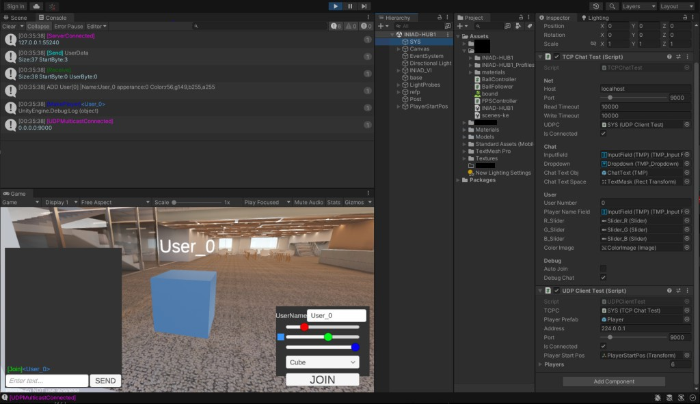

オンラインゲーム擬き
課題制作、チーム
制作時期: 2021年11月30日
制作時間: 42日
概要
Socketを利用し、C言語でサーバー、Unityでクライアントを作成したオンラインゲーム
バーチャル空間上を歩き回る機能とチャット機能がある。

役割分担
- 自分: プロジェクトリーダー、企画、Unityでの実装
- チームメイト1: サーバーの実装
- チームメイト2: サーバーのDebug等
- チームメイト3: Unityでのステージの作成
作成目的
-
C言語とSocketを利用したプログラムの作成。(課題の内容)
C言語とSocketを利用し、サーバーを作成した。